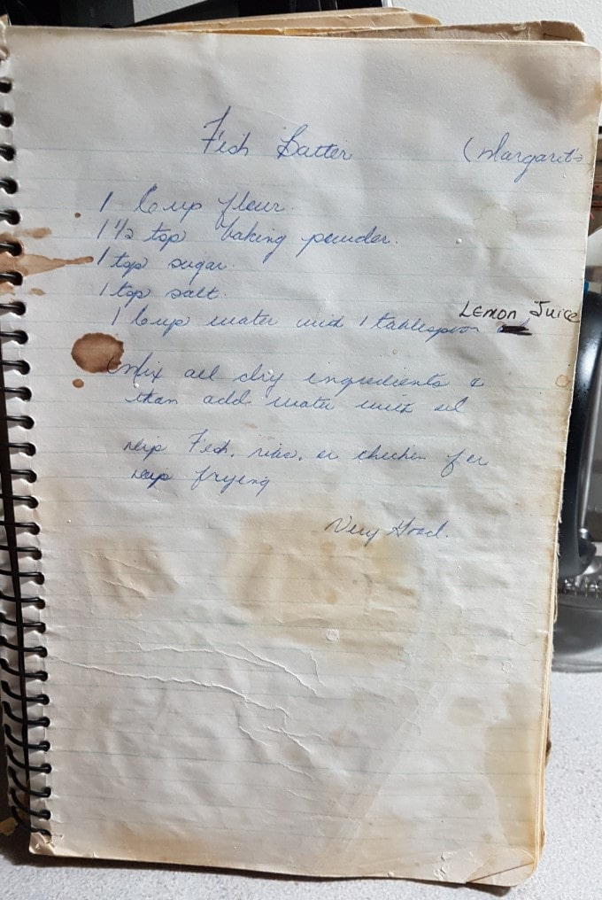

Fish Batter
Published —
Edited
Combine 1 Cup of All-Purpose Flour, ½ Tsp of Baking Powder, 1 Tsp of White Sugar, and 1 Tsp of Table Salt in a bowl and mix well. Add 1 Cup of water and 1 Tbsp of Lemon Juice to the bowl and whisk it together.
Coat your meat of choice, and deep-fry until golden brown.
